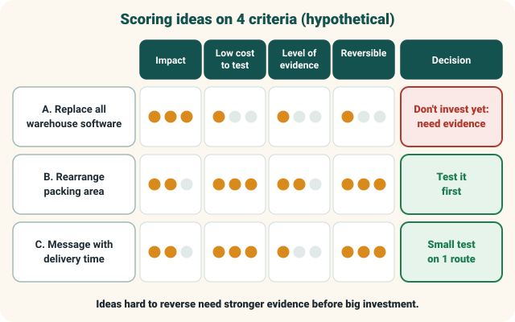

K4 · Creativity and improvement › Level 5 Leading
Make room for your team to experiment, and choose which ideas to fund using evidence
A Level 5 (Leading) lesson. How to open channels so your team dares to report bad news is covered in Hear weak signals (N6). How to lead change is covered in Lead change and AI adoption (N5).
1. Objectives
- Set up a fixed experiment budget: how many hours, how much money, who approves, for how long.
- Score and choose ideas against 4 criteria.
- Lead a blame-free review.
2. Retrieval warm-up
- What are the three steps for borrowing ideas from other fields?
- Which step ends the 5-step improvement cycle, and why is it often forgotten?
Answers
- Write the problem in general form; find 3 fields with the same problem; extract the principle, do not copy the method.
- Standardise. Once the trial is over, people think the work is done.
Review: Borrow ideas from other fields.
3. Explanation
Managers often say: "Go ahead and suggest things, I'll support you." Yet the team tries nothing. The usual reasons are no time, no money, and fear of blame if it fails. An experimenting culture is built with concrete mechanisms, not words of encouragement.
Mechanism 1. A fixed experiment budget. Write down 4 things:
The team's experiment budget
- TimeFor example: up to 4 hours per person per month for experiments.
- MoneyA small limit per experiment, without a long purchasing process.
- ApproverOne person, who approves within 2 working days.
- Trial periodUsually 2–6 weeks, with a date to review the results.
The numbers depend on your organisation. What matters is having numbers, and keeping them even when busy.
Mechanism 2. Choosing ideas with 4 criteria. Score each criterion from 1 to 3:
| Criterion | Question |
|---|---|
| Impact | If it works, which measure improves, and by how much? |
| Cost to test | How many hours and how much money does a small test take? |
| Level of evidence | Is it just an opinion, backed by baseline data, or already tested small and measured? |
| Reversible | If it fails, can we easily go back to the old way? |
An idea that is hard to reverse needs stronger evidence before a big investment. An idea that is easy to reverse can simply be tested small.
Mechanism 3. A blame-free review. After every experiment, including failed ones, ask 4 questions:
What did we plan? What actually happened? Why was it different? What do we change next time?
The "why" question is about processes and assumptions, not people. When the manager talks first about their own mistakes, the team finds it easier to be honest.
Your reaction decides the culture. Blaming someone once for a failed trial can keep the whole team silent for months.
4. Workplace example
Hypothetical scenario. Daniel is the sales manager of a chain of electronics stores. In a whole year, staff made only 1 improvement suggestion.
Daniel does this:
- Experiment budget: each store gets 8 staff hours per month and a small spending limit for trials. Daniel approves within 2 days.
- Choosing ideas: the first quarter brings 7 suggestions. He scores them on the 4 criteria with 2 store managers. They choose the 3 ideas with high scores that are easy to reverse.
- Review: the idea "message customers 7 days after purchase" did not increase repeat sales. The review finds the reason: messages went out while customers were at work. Next time, they change the sending time.
Daniel opens the review by admitting that he approved the sending time without asking any customers.
Why this works: the team has time, money and a fast approver. Ideas are chosen openly, by criteria. A failed trial still teaches something, and nobody is blamed.
5. Practice
Hypothetical scenario. You are the operations director of a mid-sized logistics company. You receive 3 proposals:
A. Replace the whole warehouse management software (not tested, high cost, hard to reverse). B. Rearrange the packing area in one warehouse (baseline measured, low cost, easy to reverse). C. Send customers a message with the expected delivery time (customer opinions, low cost, easy to reverse).
Score them on the 4 criteria and decide which to test first. For idea A, what do you need before deciding?
Hint 1
Which idea is hard to reverse? What level of evidence does it need before a big investment?
Model answer
- B: impact 2, low cost 3, evidence 2, reversible 3. Test it first.
- C: impact 2, low cost 3, evidence 1, reversible 3. Test it small on one route.
- A: impact possibly 3, low cost 1, evidence 1, reversible 1. Do not invest yet. First you need baseline data, and a small test of one module or one warehouse.
(The scores are hypothetical, for illustration.)

6. Self-check
Choose an answer. Every option has an explanation.
Question 1. A manager says "go ahead and suggest things, I'll support you", but the team tries nothing. What is the most likely reason?
-
Not quite. Teams usually have ideas, but lack time and money, and fear blame.
-
Correct. Correct. Encouragement is not enough. Clear mechanisms give people the confidence to start.
-
Not quite. Judging people without looking at the mechanisms leads to the wrong solution.
Question 2. An idea is expensive and hard to reverse. What should you do?
-
Not quite. Hard to reverse means high risk. You need stronger evidence first.
-
Correct. Correct. Ideas that are hard to reverse need a higher level of evidence.
-
Not quite. Rejecting at once may miss an opportunity. Look for a small test to get evidence.
Question 3. In a review meeting, which question fits?
-
Not quite. A blaming question makes people go silent, and nobody learns.
-
Correct. Correct. Focusing on processes and assumptions helps the whole team learn.
-
Not quite. This sounds like blame. Ask about what happened.
Question 4. Why should the manager talk first about their own mistakes in the review?
-
Correct. Correct. When the manager sets the example, the team speaks more honestly.
-
Not quite. The aim is not to carry the blame for others, but to open an honest discussion.
-
Not quite. There is no general rule like this. It is a practice that builds trust.
Question 5. The experiment budget is 4 hours per person per month. This month the team is busy. What do you do?
-
Not quite. Dropping it when busy shows the team that experiments are not really valued.
-
Correct. Correct. Keeping the numbers even when busy is what gives the mechanism value.
-
Not quite. Promises to make up for it are easy to break. Keeping it steady is better.
7. Reflection
- Over the past year, how many new ways of working has your team tried? What got in the way most?
- The last time an experiment failed, how did you react in the first 5 minutes?
8. Real-world application
Over the next 7 days, write your team's experiment budget with all 4 elements: time, money, approver, trial period. Tell your team. Choose a recently finished experiment and lead a review using the 4 questions.
Level of evidence. Edmondson (1999), Administrative Science Quarterly 44(2): teams with high psychological safety show more learning behaviour. Camuffo and colleagues (2020), Management Science 66(2): start-ups taught to run structured experiments achieved better results. The three mechanisms and the scoring scale are this site's proposal.
9. Metadata
| skill | K4 · Creativity and improvement |
|---|---|
| level | Level 5 · Leading |
| group | N5, N6 |
| framework_map | WEF: Creative thinking; Leadership and social influence; CSfW: 3d Create and innovate; SkillsFuture CCS: Creative Thinking; Developing People; EntreComp: Valuing ideas; Coping with uncertainty, ambiguity and risk (reference only) |
| original | Vietnamese version |
| updated | 2026-11-14 |
Finish the lesson
Mark it as done and the site suggests reviews after 1, 3 and 7 days. The data stays on your device only.
Suggested reviews: